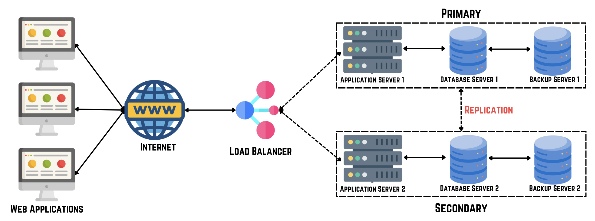
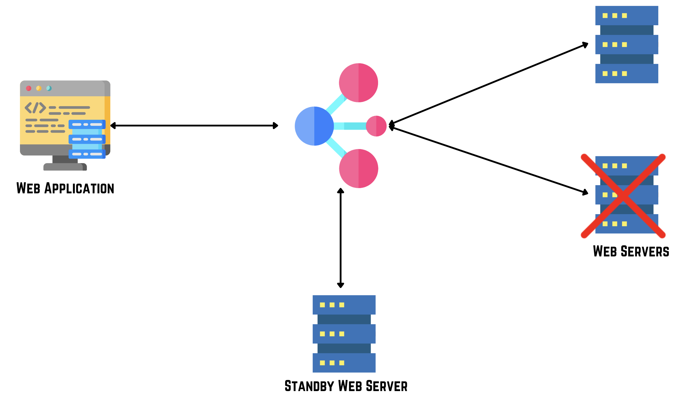
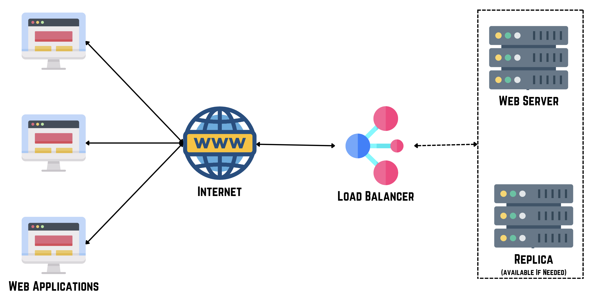
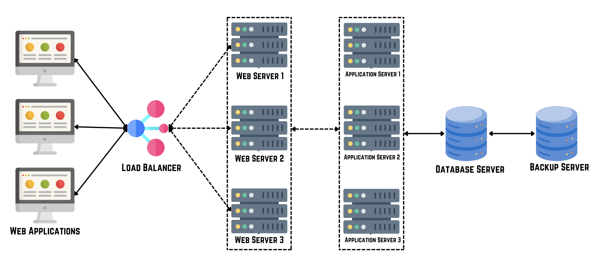
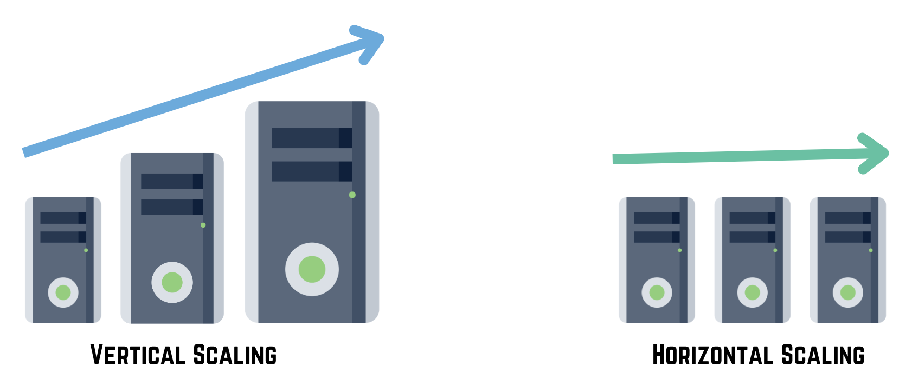

Reliability
Reliability is a crucial aspect of system design that focuses on ensuring consistent and predictable performance under varying conditions. It encompasses the ability of a system to operate continuously without failure, meet performance expectations, and recover swiftly from faults or errors.
Components of Reliability
- Fault Tolerance: The system's ability to continue operating despite hardware or software failures. 
- Availability: Ensuring that the system is accessible and operational when needed, usually expressed as a percentage of uptime. 
- Resilience: The system's capacity to recover quickly and gracefully from disruptions or failures. 
- Scalability: The ability to handle increasing loads or user demands without sacrificing performance. 
Measuring Reliability
- Mean Time Between Failures (MTBF): Average time elapsed between system failures.
- Mean Time to Recovery (MTTR): Average time required to restore the system after a failure.
- Service Level Agreement (SLA): Contractual commitment regarding system availability and reliability.
Strategies for Improving Reliability
- Redundancy: Implementing duplicate components or systems to ensure continuous operation.
- Fault Isolation: Designing systems to contain faults and prevent them from affecting other components.
- Automated Monitoring and Recovery: Using tools and processes to detect failures and initiate automatic recovery actions.
- Load Balancing: Distributing workloads across multiple servers or resources to prevent overload and improve reliability.
- Continuous Testing and Improvement: Regularly testing systems, identifying weaknesses, and implementing improvements to enhance reliability.
Reliability is essential for ensuring uninterrupted service delivery, maintaining user trust, and meeting business objectives. By incorporating reliability principles, metrics, and strategies into system design, organizations can build robust, resilient, and high-performance systems capable of withstanding challenges and delivering consistent value.